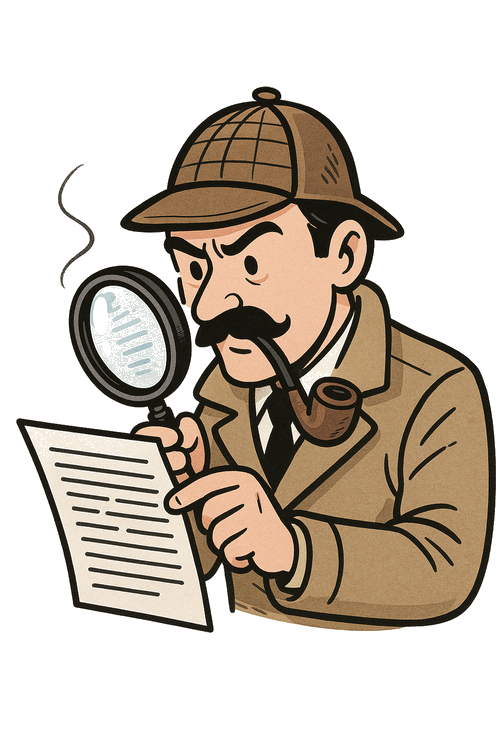

El Detective de Textos
¡Bienvenido, Detective! Elige un caso para comenzar tu investigación o consulta tu manual para repasar las técnicas.
Manual del Detective
Todo buen detective necesita dominar sus herramientas. Estas son tus técnicas de investigación textual.
Lectura Exploratoria: La Inspección Rápida
Es el primer vistazo a la "escena del crimen". El objetivo es obtener una idea general del caso en segundos, no resolverlo.
- Qué hacer: Lee el título, subtítulos, palabras en negrita y la primera y última oración de cada párrafo.
- Pregunta clave: ¿De qué trata este texto a grandes rasgos?
Lectura Comprensiva: El Interrogatorio
Aquí buscas entender los hechos. Lees con atención para saber exactamente qué dice el texto. Es el momento de interrogar cada párrafo.
- Qué hacer: Lee el texto completo de forma pausada, preguntándote: "¿Qué me está diciendo esta sección?".
- Pregunta clave: ¿Qué información concreta presenta el autor?
Lectura Analítica: La Deducción Final
Aquí te preguntas POR QUÉ y CÓMO dice el autor lo que dice. Buscas la intención oculta, el tono y su estrategia.
- Qué hacer: Cuestiona el propósito del autor, analiza su tono y evalúa sus argumentos.
- Pregunta clave: ¿Cuál es la verdadera intención del autor y qué técnicas usa?
Pistas Clave vs. Evidencia de Apoyo (Ideas Principales y Secundarias)
No todas las pistas tienen el mismo peso. Debes saber diferenciar lo esencial de lo complementario.
- Idea Principal (Pista Clave): Es la afirmación más importante de un párrafo. Si la quitas, el párrafo pierde su sentido.
- Idea Secundaria (Evidencia de Apoyo): Son los detalles, ejemplos o datos que respaldan y dan fuerza a la idea principal.